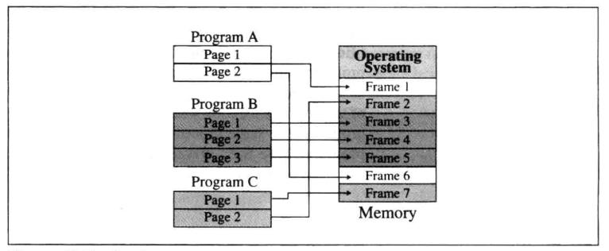
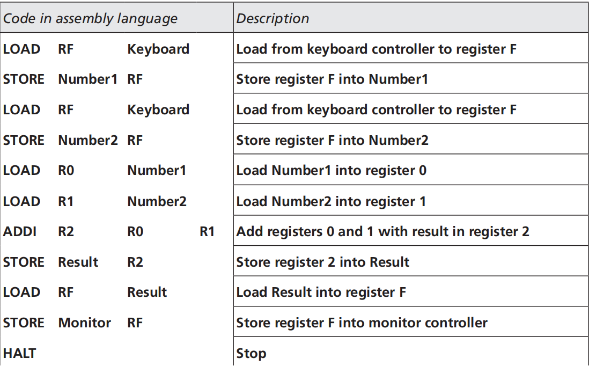

Learning Suggestions
A computer is a system made of two major components: hardware and software. Computer hardware is the physical equipment, which has been studied before. Now, as for the software, it is the collection of programs that allows the hardware to do its job. Instead of just being known as some programs operating in the computer, software contains many parts, dividing into two broad categories: operating system and application program. In this section, we will have a systematic learning of the framework of the system and its elements.
Operating System
In the operating system part, we need to learn about its history of evolution. We will also learn the components of the operating system, understanding each part’s own functions and the relationships between them. This section contains many new concepts, so make sure you can distinguish their definitions and operating modes.
Definition
To begin with, let’s introduce the common definitions and some terms of the operating systems.
To sum up, there are two major design goals of an operating system: to efficiently use the hardware, and to easily use resources. Thus, in the long history of evolution, the need for more speed and efficiency urged people to introduce and update their technology.
History
Modern operating systems have evolved significantly over time to meet the increasing demands for performance and efficiency. The study of their history includes key technological advancements and milestones.
Components
Modern operating systems use three terms that refer to a set of instructions: program, job, and process.
- Program: A nonactive set of instructions, stored on disk or tape.
- Job: A program becomes a job from the moment it is selected for execution until it has finished running and becomes a program again. Every job is a program, but not every program is a job.
- Process: A program in execution. A job that is residing in memory.
After understanding the relationship between a program, a job, and a process, we will learn the components of the operating system and how the managers in it are responsible for managing different departments and cooperate with others.
User Interface / Shell
The user interface/shell is responsible for communication outside the operating system.
Memory Manager
The memory manager prevents the "running out of memory" syndrome. It can be divided into two broad categories: Monoprogramming and Multiprogramming.
Monoprogramming
Monoprogramming belongs to the past. Most of the memory capacity is dedicated to one single program, and only a small part is needed to hold the operating system. It had some problems such as the program must fit in memory and when one program is being run, no other program can be executed.
Multiprogramming
In multiprogramming, more than one program is in memory at the same time and they are executed concurrently. The CPU switches between the programs. Multiprogramming has gone through several improvements since the 1960s.
- Nonswapping: The program remains in memory for the duration of execution. The first technique used is called partitioning, where memory is divided into variable length sections.
- Paging: Improves the efficiency of partitioning. Memory is divided into equally sized sections called frames. The program is divided into equally sized sections called pages. 
- Demand Paging: Removes the last restriction that the whole program needs to be in memory before being executed.
- Virtual Memory: Implies demand paging, demand segmentation, or both. For example, a memory size of 10MB can execute 10 programs, each of size 3MB, for a total of 30MB.
Process Manager
The process manager uses two schedulers to move jobs or processes from one state to another: the job scheduler and the process scheduler.
- Job Scheduler: Moves a job from the hold state to the ready state or from the running state to the terminated state.
- Process Scheduler: Moves a process from one state to another, handling various scenarios such as waiting for an event or time allocation expiration.

To handle multiple processes and jobs, the process manager uses queues. A job control block or process control block stores information about the job or process. The operating system can have multiple queues.
Deadlock and Starvation
Deadlock occurs when the operating system does not put resource restrictions on processes. Four necessary conditions for it are: 1) mutual exclusion, 2) resource holding, 3) no preemption, 4) circular waiting.
Starvation happens when the operating system puts too many resource restrictions on a process.
Device Manager
The device manager is responsible for access to input/output devices. It monitors every input/output device constantly to ensure that each device is functioning properly. It maintains a queue for each input/output device and controls different policies for accessing these devices.
File Manager
The file manager controls access to the files. It supervises the creation, deletion, and modification of files, controls the naming of files, supervises the storage of files, and is responsible for archiving and backups.